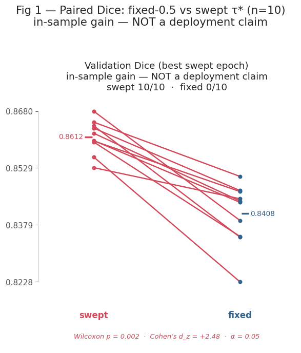
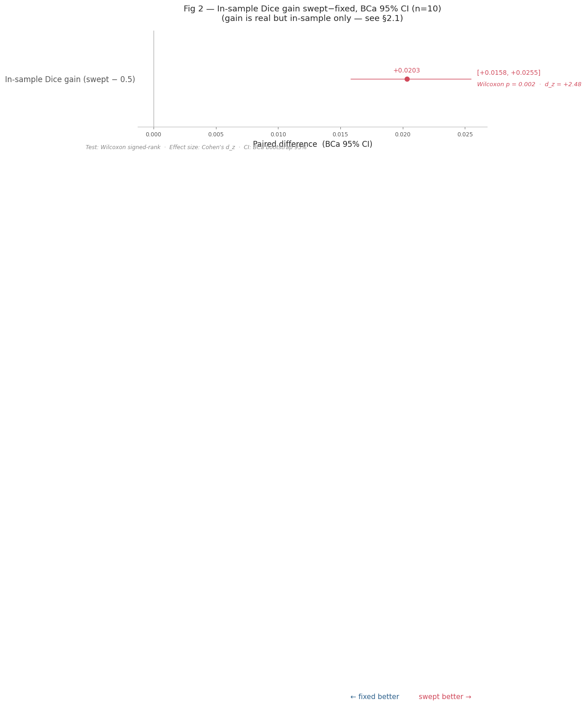
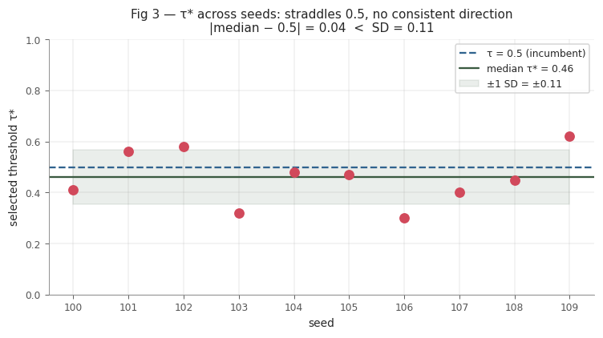
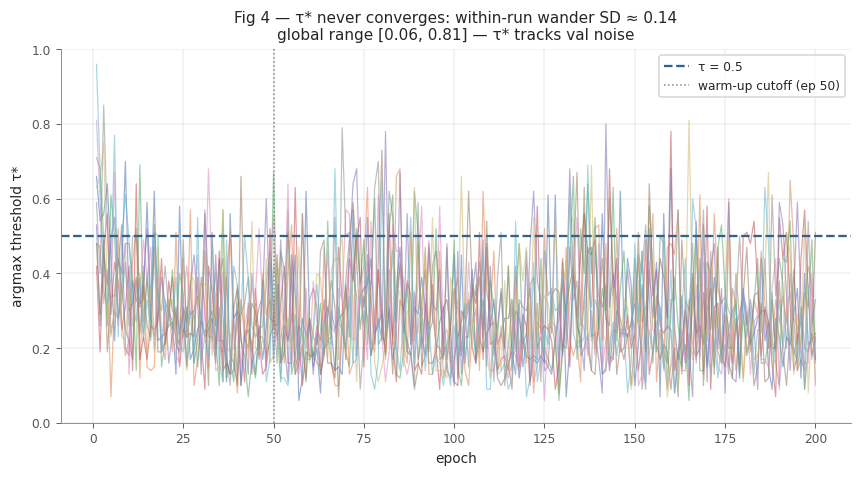

E4 — ISIC 2017 UNet2D Decision-Threshold Selection (10 seeds)¶
Research question. The locked model is classical + attention_gate at lr = 3e-4 (see E2). At inference, its sigmoid output map is binarised at a decision threshold τ. This experiment evaluates whether replacing the default τ = 0.5 with a validation-tuned threshold τ* yields a deployable improvement.
Experimental design. Ten independent seeds (100–109) are trained, each using the classical + attention_gate configuration. At every epoch, a grid search over τ is performed on the ISIC-2017 validation set, recording: the best Dice under τ* (val_best_dice_at_threshold), the argmax threshold (val_optimal_threshold), and the in-sample gain over the fixed-τ = 0.5 baseline. Each run is summarised at its best swept epoch — the epoch maximising val_best_dice_at_threshold,
corresponding to the deployment checkpoint — and two sequential questions are posed:
Q1 — Is the gain real? Paired comparison of swept-Dice versus 0.5-Dice at the same epoch.
Q2 — Is τ* deployable? Threshold-stability diagnostics across seeds and across epochs within a run.
Data sources. E4-isic2017-unet2d-thres-sweep.db (seeds 100–105) and …-part2.db (seeds 106–109) — 10 FINISHED runs in total.
Scope note. τ* is selected on the same 150 validation images against which it is scored. A positive in-sample gain is therefore expected by construction; the stability diagnostics in Q2 constitute the operative test of deployability.
Executive summary¶
Paired comparison across 10 seeds: Δ = swept − fixed-0.5, evaluated at the same model weights and best-swept epoch.
Primary test: Wilcoxon signed-rank.
Confidence interval: BCa bootstrap 95 % (10 000 resamples, seed = 42).
d_z: Cohen’s paired effect size.
Metric |
Swept τ* |
Fixed τ = 0.5 |
Δ (swept−fixed) |
95 % BCa CI |
Wilcoxon p |
d_z |
Verdict |
|---|---|---|---|---|---|---|---|
In-sample Dice gain — primary |
0.8503 |
0.8300 |
+0.0203 |
[+0.0145, +0.0262] |
0.0020 |
+2.48 |
Gain confirmed — in-sample only |
Stability (Q2 — operative test).
Axis |
What is measured |
Epoch(s) |
Median |
SD |
|median − 0.5| |
Verdict |
|---|---|---|---|---|---|---|
τ* across seeds |
τ* at each seed’s best-swept epoch — 10 values, one per deployment checkpoint |
best-swept epoch (one per seed) |
0.46 |
0.106 |
0.04 |
Fail — displacement from 0.5 is less than one SD; median is statistically indistinguishable from the incumbent |
τ* epoch stability |
within-run SD of τ* per seed, averaged over 10 seeds; global range [0.06, 0.81] |
epochs 50 → end (post-warm-up tail) |
— |
mean 0.137 |
— |
Fail — τ* co-varies with validation noise rather than reflecting a stable decision boundary |
Decision: retain the fixed decision threshold τ = 0.5.
[1]:
# ── Imports ────────────────────────────────────────────────────────────────────────────
import sys
from pathlib import Path
PROJECT_ROOT = Path('/teamspace/studios/this_studio/repos/SkiNet')
sys.path.insert(0, str(PROJECT_ROOT))
import numpy as np
import pandas as pd
from IPython.display import display
from SkiNet.Utils.analysis.plotting import (
set_paper_style,
plot_threshold_slopegraph,
plot_threshold_forest,
plot_tau_across_seeds,
plot_tau_trajectories,
)
from SkiNet.Utils.analysis.reporting import show_gain_table
from SkiNet.Utils.analysis.threshold_sweep import (
load_threshold_sweep, epoch_trajectories,
paired_gain_stats, threshold_stability,
TAU_KEY,
)
# ── Configuration — every tunable argument lives in this cell ────────────────────
FIG_DIR = PROJECT_ROOT / 'analysis_results'
DB1 = PROJECT_ROOT / 'mlruns' / 'E4-isic2017-unet2d-thres-sweep.db' # seeds 100-105
DB2 = PROJECT_ROOT / 'mlruns' / 'E4-isic2017-unet2d-thres-sweep-part2.db' # seeds 106-109
PART_SPLIT = 105 # seeds <= 105 -> part P1, else P2 (for sanity reporting only)
WARMUP = 50 # epochs dropped before measuring tau* wander (pre-convergence ROC is degenerate)
ALPHA = 0.05
DEFAULT_TAU = 0.5 # the fixed threshold we are testing against
N_BOOT = 10_000 # bootstrap samples for CIs
RNG_SEED = 42 # bootstrap seed; int so re-running any cell reproduces identical CIs
# Palette — swept (tuned) vs fixed-0.5, kept consistent with the house red/blue.
C_SWEPT, C_FIXED, C_TAU = '#d1495b', '#30638e', '#3a5a40'
PALETTE = {'swept': C_SWEPT, 'fixed': C_FIXED}
# Metric specs — same pattern as E2
_DICE_COL = 'val_dice_at_threshold'
SLOPE_METRICS = [(_DICE_COL, 'Validation Dice (best swept epoch)\nin-sample gain — NOT a deployment claim')]
FOREST_SPECS = [('In-sample Dice gain (swept − 0.5)', 'in_sample_dice_gain', False)]
set_paper_style(context='notebook')
pd.set_option('display.width', 240)
pd.set_option('display.float_format', '{:.4f}'.format)
1. Data¶
load_threshold_sweep collapses each run to one row at its best swept epoch — the epoch maximising val_best_dice_at_threshold, which corresponds to the deployment checkpoint. Columns:
``val_best_dice_at_threshold`` — Dice at the per-epoch argmax threshold τ* (in-sample optimum).
``val_dice`` — Dice of the same model and epoch evaluated at the fixed τ = 0.5.
``val_dice_gain`` —
val_best_dice_at_threshold − val_dice; the paired in-sample improvement attributable to threshold tuning.``val_optimal_threshold`` — the selected threshold τ* at that epoch.
``val_tau_wander_sd`` / ``val_tau_min`` / ``val_tau_max`` — standard deviation and range of τ* over the post-warm-up epoch tail (within-run instability).
``val_iou`` / ``gen_gap`` / ``samples_per_sec`` — supplementary metrics recorded at the same epoch.
[2]:
per_seed = load_threshold_sweep(DB1, DB2, part_split=PART_SPLIT, warmup=WARMUP)
SEEDS, N = per_seed['seed'].tolist(), len(per_seed)
print(f'Loaded {N} runs | seeds: {SEEDS}')
per_seed
Loaded 10 runs | seeds: [100, 101, 102, 103, 104, 105, 106, 107, 108, 109]
[2]:
| seed | part | best_ep | val_best_dice_at_threshold | val_dice | val_dice_gain | val_optimal_threshold | val_tau_wander_sd | val_tau_min | val_tau_max | val_iou | gen_gap | samples_per_sec | n_epochs | |
|---|---|---|---|---|---|---|---|---|---|---|---|---|---|---|
| 0 | 100 | P1 | 133 | 0.8641 | 0.8346 | 0.0295 | 0.4100 | 0.1247 | 0.0600 | 0.6800 | 0.7254 | 0.0697 | 103.1489 | 200 |
| 1 | 101 | P1 | 172 | 0.8558 | 0.8228 | 0.0330 | 0.5600 | 0.1468 | 0.0800 | 0.6800 | 0.7079 | 0.0894 | 102.8123 | 200 |
| 2 | 102 | P1 | 154 | 0.8680 | 0.8390 | 0.0289 | 0.5800 | 0.1438 | 0.0600 | 0.6600 | 0.7291 | 0.0721 | 102.8735 | 200 |
| 3 | 103 | P1 | 193 | 0.8651 | 0.8507 | 0.0144 | 0.3200 | 0.1424 | 0.0700 | 0.7800 | 0.7473 | 0.0766 | 102.9969 | 200 |
| 4 | 104 | P1 | 172 | 0.8621 | 0.8442 | 0.0179 | 0.4800 | 0.1504 | 0.0700 | 0.8000 | 0.7372 | 0.0706 | 103.0511 | 200 |
| 5 | 105 | P1 | 181 | 0.8635 | 0.8470 | 0.0165 | 0.4700 | 0.1386 | 0.0700 | 0.7300 | 0.7404 | 0.0694 | 103.8735 | 200 |
| 6 | 106 | P2 | 172 | 0.8602 | 0.8438 | 0.0163 | 0.3000 | 0.1216 | 0.0600 | 0.6400 | 0.7353 | 0.0629 | 104.1282 | 200 |
| 7 | 107 | P2 | 152 | 0.8530 | 0.8448 | 0.0082 | 0.4000 | 0.1370 | 0.0900 | 0.7900 | 0.7372 | 0.0704 | 104.1130 | 200 |
| 8 | 108 | P2 | 193 | 0.8601 | 0.8467 | 0.0134 | 0.4500 | 0.1373 | 0.0700 | 0.8100 | 0.7398 | 0.0749 | 104.2626 | 200 |
| 9 | 109 | P2 | 132 | 0.8598 | 0.8348 | 0.0250 | 0.6200 | 0.1288 | 0.0700 | 0.6900 | 0.7232 | 0.0751 | 103.7278 | 200 |
2. Statistical methods¶
2.1 Two independent questions¶
This experiment addresses a calibration question rather than an A/B model comparison. Two conditions must both be satisfied before a validation-tuned threshold is considered deployable.
Question |
What it tests |
Statistic |
|---|---|---|
Q1 — Is the gain real? |
Does τ* improve Dice over τ = 0.5 on the validation set? |
Wilcoxon signed-rank + BCa bootstrap CI + d_z on the 10 paired (swept, 0.5) differences |
Q2 — Is τ* deployable? |
Does the selected τ* generalise — i.e. is it stable across runs and stable within a run? |
Spread of τ* across seeds; epoch-to-epoch variation within each run |
2.2 Q1 — paired in-sample gain (paired_gain_stats)¶
Within each seed, the swept and fixed-0.5 scores are obtained from identical weights at the same epoch, so the only source of variation is τ. The 10 paired differences Δᵢ = sweptᵢ − dice_05ᵢ eliminate both seed-to-seed and convergence-related variability.
Wilcoxon signed-rank — non-parametric, rank-based, robust to outlier seeds; H₀: median Δ = 0. At n = 10 the minimum achievable two-tailed p is 2 / 2¹⁰ = 0.00195, attained only when all 10 differences share a common sign.
BCa bootstrap 95 % CI on mean(Δ) — 10 000 resamples, seed = 42; consistent with the E2 protocol. An interval excluding 0 establishes the sign of the mean effect.
Cohen’s d_z \(= \bar\Delta\,/\,\mathrm{SD}(\Delta,\ \mathrm{ddof}=1)\) — the paired signal-to-noise ratio. Reference scale (Cohen 1988): 0.2 small · 0.5 medium · 0.8 large. Reported as a descriptive quantity at n = 10.
2.3 Q2 — threshold stability (threshold_stability)¶
A calibration gain is deployable only if the threshold that produced it is stable. Two independent failure modes are assessed; either one alone is sufficient to disqualify a tuned threshold.
Failure mode A — τ* does not agree across seeds¶
What is measured. Each run is reduced to a single row at its best-swept epoch — the epoch maximising val_best_dice_at_threshold, i.e. the deployment checkpoint. At that epoch, τ* (the argmax threshold) is recorded. This yields 10 values, one per seed, representing the threshold each independently trained model instance would recommend for deployment.
The stability summary reports the median, mean, and standard deviation of those 10 values, together with tau_dist_from_half = |median(τ*) − 0.5|.
Interpretation. If the 10 seeds recommend thresholds scattered around 0.5 with no consistent direction, there is no systematic miscalibration that the architecture consistently exhibits. The per-seed gains then reflect each run adapting to its own validation sample rather than a shared property of the model.
Failure criterion. tau_dist_from_half < tau_sd — the median lies within one standard deviation of 0.5 and is therefore statistically indistinguishable from the incumbent.
Failure mode B — τ* does not converge within a run¶
What is measured. For each seed, τ* is recorded at every epoch from warm-up (epoch WARMUP = 50) to the end of training. The standard deviation of those per-epoch τ* values within that run is tau_wander_sd; the mean across all 10 runs is mean_wander_sd. The global minimum and maximum of τ* across all seeds and all post-warm-up epochs define the range [tau_global_min, tau_global_max].
Interpretation. A well-calibrated threshold should reflect a fixed property of the model’s decision boundary. Once the model has converged in Dice, τ* should also stabilise. A high within-run standard deviation indicates that τ* is tracking the sampling variability of the 150-image validation set rather than a structural property of the learned weights.
Failure criterion. mean_wander_sd > 0.05 — τ* varies by more than 5 percentage points on average after the warm-up period.
Independence of failure modes. The two failure modes are orthogonal. Failure mode A indicates that different model instances would require different deployment thresholds — there is no shared miscalibration to correct. Failure mode B indicates that even a single instance cannot produce a reliable threshold estimate. Either condition alone is sufficient grounds to reject a tuned threshold.
Deployment rule. A tuned threshold is recommended only when (Q1 is significant) and (tau_dist_from_half substantially exceeds tau_sd) and (mean_wander_sd < 0.05). Failure on either stability criterion entails retaining τ = 0.5.
3. Results¶
3.1 Q1 — In-sample gain: is the improvement over τ = 0.5 statistically significant?¶
[3]:
gain = paired_gain_stats(per_seed, n_resamples=N_BOOT, random_state=RNG_SEED)
show_gain_table(per_seed, gain, alpha=ALPHA)
| val_best_dice_at_threshold | val_dice (τ=0.5) | Δ (swept−0.5) | 95% BCa CI | wilcoxon_p | sig | d_z | wins | |
|---|---|---|---|---|---|---|---|---|
| in_sample_dice_gain | 0.8612 | 0.8408 | +0.0203 | [+0.0158, +0.0255] | 0.0020 | ✓ | 2.4800 | 10/10 |
per-seed Δ : [0.0295, 0.033, 0.0289, 0.0144, 0.0179, 0.0165, 0.0163, 0.0082, 0.0134, 0.025]
→ REJECT H0 (gain ≠ 0) — in-sample only
3.2 Q2 — Threshold stability: is τ* consistent enough to deploy?¶
[4]:
stab = threshold_stability(per_seed)
Across seeds (does τ* agree run-to-run?)
median τ* : 0.460
mean τ* : 0.459
SD of τ* (seeds) : 0.106
|median − 0.5| : 0.040
Within a run, across epochs (does τ* converge?)
mean within-run SD : 0.137
global τ* range : [0.06, 0.81]
Verdict on stability:
median τ* within 1 SD of 0.5 ? True → no systematic miscalibration
τ* wanders within a run ? True → τ* tracks val noise, not converged
4. Figures¶
Fig 1 — paired slopegraph. One line per seed from τ = 0.5 to the swept τ* Dice. All 10 lines rise, reflecting the universal in-sample gain
Fig 2 — forest plot. Point estimate = mean Δ; interval = BCa 95 % CI (§2.2). The interval excludes 0, confirming the in-sample gain; axis labels explicitly indicate the in-sample scope.
Fig 3 — τ* across seeds. Selected threshold per seed relative to the τ = 0.5 reference. Values are distributed on both sides of 0.5 with no consistent directional offset.
Fig 4 — τ* epoch trajectories. Within-run τ* over the course of training (post-warm-up). τ* does not converge, exhibiting large-amplitude fluctuations across nearly the entire unit interval in every seed.
[9]:
plot_threshold_slopegraph(
per_seed, gain, SLOPE_METRICS,
palette=PALETTE, seeds=SEEDS, alpha=ALPHA,
title=f'Fig 1 — Paired Dice: fixed-0.5 vs swept τ* (n={N})\nin-sample gain — NOT a deployment claim',
save_path=FIG_DIR / 'E4_NEW_fig1_paired_slopegraph.png',
);

[6]:
plot_threshold_forest(
gain, FOREST_SPECS,
palette=PALETTE, n=N, alpha=ALPHA,
title=(
f'Fig 2 — In-sample Dice gain swept−fixed, BCa 95% CI (n={N})\n'
f'(gain is real but in-sample only — see §2.1)'
),
save_path=FIG_DIR / 'E4_NEW_fig2_forest_gain.png',
);
/teamspace/studios/this_studio/repos/SkiNet/SkiNet/Utils/analysis/plotting.py:806: UserWarning: Tight layout not applied. The bottom and top margins cannot be made large enough to accommodate all Axes decorations.
fig.tight_layout()

[7]:
plot_tau_across_seeds(
per_seed, stab,
default_tau=DEFAULT_TAU,
c_fixed=C_FIXED, c_swept=C_SWEPT, c_tau=C_TAU,
save_path=FIG_DIR / 'E4_NEW_fig3_tau_across_seeds.png',
);

[8]:
traj = epoch_trajectories(DB1, DB2, keys=(TAU_KEY,), part_split=PART_SPLIT)
plot_tau_trajectories(
traj, stab,
warmup=WARMUP, default_tau=DEFAULT_TAU, tau_key=TAU_KEY,
c_fixed=C_FIXED,
save_path=FIG_DIR / 'E4_NEW_fig4_tau_trajectories.png',
);

5. Decision¶
The fixed decision threshold τ = 0.5 is retained. Deployment of a validation-tuned per-run τ* is not supported by this evidence.
Priority |
Criterion |
Result |
Status (n = 10) |
|---|---|---|---|
1 |
τ* stability across seeds (operative) |
median 0.46, SD 0.106, |median − 0.5| = 0.04 |
Fail — τ* straddles 0.5 with no consistent directional offset; the median is statistically indistinguishable from the 0.5 base value |
2 |
τ* convergence within a run (operative) |
wander SD ≈ 0.137, range [0.06, 0.81] |
Fail — τ* co-varies with validation sampling noise and does not stabilise across epochs |
3 |
In-sample gain (swept − 0.5) |
+0.0203 Dice, 10/10 seeds, p = 0.002, d_z = +2.48 |
Confirmed — in-sample only — the gain is expected by construction of the argmax-on-evaluation-set estimator |
Rationale. The +2 Dice-point gain is unanimous across seeds and statistically maximal (Wilcoxon p = 0.002, the minimum achievable at n = 10), yet it is produced by selecting τ* on the same 150 images used for scoring. Both operant stability criteria fail: the selected threshold neither agrees across seeds — its median is 0.04 from 0.5, well within one standard deviation — nor converges within a run, fluctuating across nearly the full unit interval epoch-to-epoch. The fixed threshold τ = 0.5 is therefore the correct, robust choice.
A 5-fold CV on he 150 image val se would be an option